The Brief
A local theater with a paper ticket problem — and a bigger accessibility one.
Kasanova Theater, a hypothetical local cinema in the tri-state area, had two problems worth solving. The first was operational: they still required printed tickets, which frustrated digitally-native moviegoers and created friction at the door. The second was deeper: their existing site was incompatible with screen readers, locking out an entire segment of users — including those with visual impairments — from booking independently.
The goal was to design a mobile app that solved both: a fast, accessible, digital-first ticketing experience that felt native to how people actually plan spontaneous entertainment on their phones.
Accessibility wasn't a checkbox on this project — it was built into the brief from day one. Designing for a screen-reader-friendly experience early shaped every layout and navigation decision that followed.
Research
What frequent moviegoers actually need from their phones.
User interviews and affinity mapping surfaced a primary user group: frequent moviegoers who plan ahead and want the entire purchase flow to happen on mobile without interruption. But research also revealed something the initial brief hadn't foregrounded — last-minute plans are common, and the cognitive cost of switching from a phone to a desktop just to buy tickets was genuinely deterring attendance.
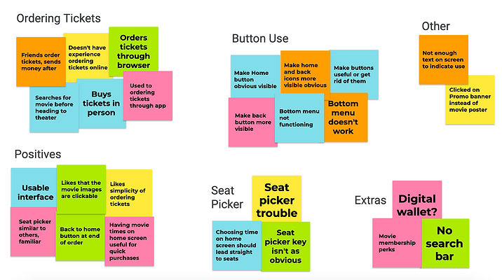
Affinity mapping — research insights organized into themes to identify design priorities
User Pain Points
Pain Point 01
No Mobile Ticketing
Users wanted to buy and store tickets entirely on their phone — no printing, no desktop required. The existing paper ticket system felt anachronistic and wasteful.
Pain Point 02
Screen Reader Inaccessibility
The existing site was incompatible with assistive technology, making it functionally unusable for vision-impaired users. This wasn't a minor usability issue — it was a complete access barrier.
Pain Point 03
Slow, Stateless Checkout
Frequent buyers had to re-enter payment and personal information on every purchase. No saved state, no remembered preferences — a friction point that worsened with group bookings.
Pain Point 04
Mobile Site Instability
The mobile site lagged and occasionally crashed mid-checkout — forcing users to restart the entire purchase flow. On opening weekends, this was enough to abandon the attempt entirely.
Competitive Audit
Four direct and indirect competitors were audited through the lens of mobile ticket purchasing — evaluating checkout flow, accessibility support, digital ticket storage, and information density. The goal was to identify what the market had already solved and where a deliberate design could improve on existing patterns.
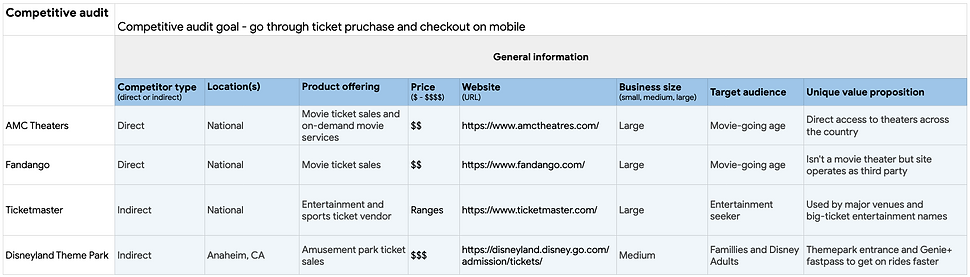
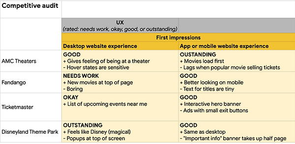
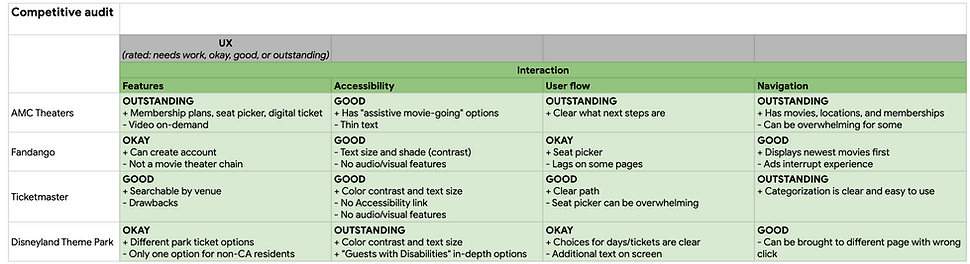
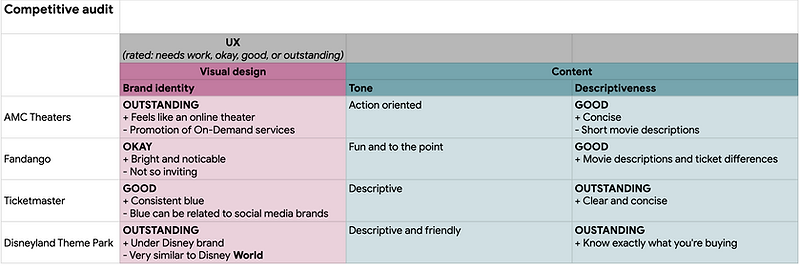
Competitive audit across four ticketing apps — identifying gaps and best practices to inform design decisions
Define & Ideate
Two users. Very different needs. One design serving both.
Research crystallized around two distinct user archetypes whose needs, while different in origin, pointed to the same design solutions: fast checkout, digital tickets, and a screen that works with assistive technology.
Vanessa T.
Pediatrician · Visual Impairment · Screen Reader User
Frustrations
- Site incompatible with screen reader — can only book on desktop
- Limited time off makes every friction point feel costly
- Misses opening weekends because mobile booking is unusable
Goals
- Book tickets independently on mobile with screen reader
- Fast, uninterrupted checkout that doesn't crash or reset
- Experience opening weekends like everyone else
Oliver S.
Accountant · Frequent Moviegoer · Group Ticket Buyer
Frustrations
- Required to print tickets — wasteful and unnecessary
- Re-entering payment info on every purchase
- Ordering for groups of 7+ is slow and error-prone
Goals
- Digital ticket scanning — no printing, no paper
- Saved account info for repeat purchases
- Self-serve kiosk check-in to skip staff interaction
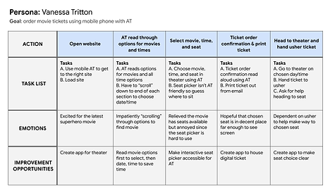
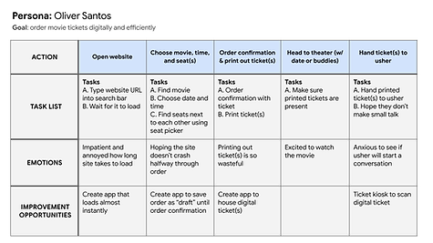
Journey maps for Vanessa and Oliver — surfacing the moments where the current experience loses each user
Sketching & Wireframing
From paper sketches to digital structure.
Early sketches explored the home screen's core hierarchy — movie posters, showtimes, and a bottom navigation bar — keeping the interface sparse enough for screen reader compatibility. Storyboarding helped map the full ticket purchase flow in context, not just screen by screen.
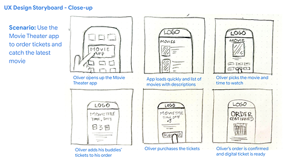
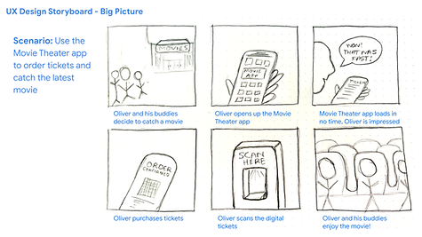
Storyboards — close-up flow and big-picture context to keep the design grounded in real use scenarios
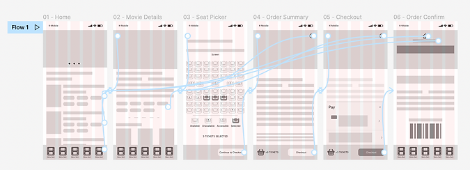
Low-fidelity wireframes — establishing layout structure before visual design
Testing & Iterating
A usability study that confirmed simplicity — and revealed one blind spot.
A usability study on the low-fidelity prototype produced clear, actionable findings. Users responded positively to the app's focused, low-cognitive-load structure — but two friction points emerged that shaped the high-fidelity iteration significantly.
Preserve the simplicity — it's a feature
Users consistently noted the app's clean, low-distraction interface. The instinct to add more was actively resisted — simplicity wasn't a design gap, it was the design working as intended.
Seat selection needed clearer affordance
The seat picker screen lacked obvious instruction — users understood the concept but hesitated before interacting. Instructions and visual state changes were made more explicit in the next iteration.
Home and back navigation weren't obvious enough
Bottom navigation and back buttons lacked sufficient visual weight. Increased icon clarity and tap target size resolved the issue — a direct application of WCAG 2.5.5 target size guidance.
End Result
Low-fi to hi-fi — and a style system to hold it together.
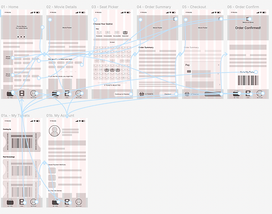
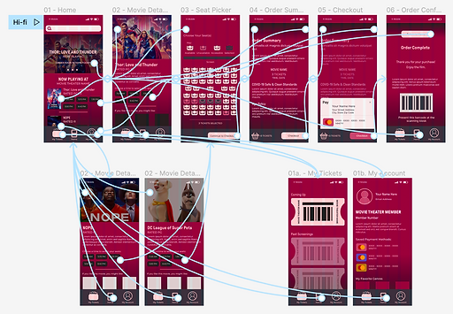
Low-fidelity (post-iteration) and high-fidelity prototype — the same core structure, elevated with visual design
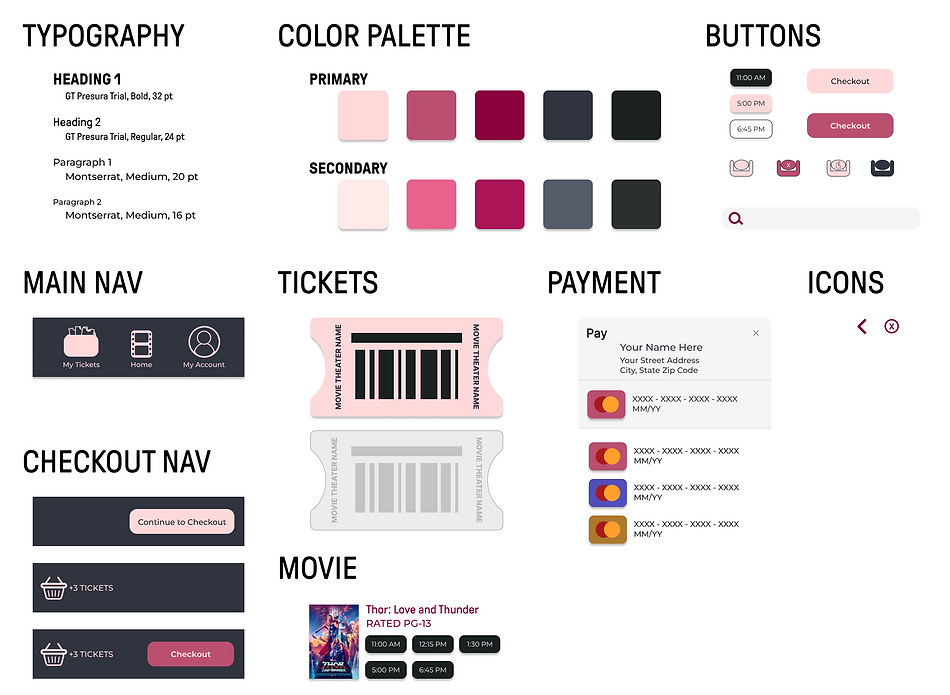
Style sheet — color, typography, and components documented for visual consistency across the prototype
Accessibility Decisions
Screen Reader Compatible
Semantic structure and alt text applied throughout — designed from the start to work with iOS VoiceOver, not retrofitted after.
WCAG Color Contrast
All text and interactive element color pairs pass WCAG 2.1 AA contrast requirements — validated against the full style sheet.
Icon-Supported Navigation
Icons paired with labels throughout — reducing reliance on text-only affordances and supporting users across language and literacy levels.
"The app made it so easy to order multiple tickets and the process was so fast, I didn't have to think about rushing to the theater!"
— Peer feedback, usability studyWhat I Learned
The foundational lessons that still shape how I work.
Apps are not websites — scope is a feature
Designing a focused mobile app forced a discipline I've carried into every project since: a product with a clear, singular purpose produces a better user experience than one that tries to do everything. Constraints are clarifying.
Accessibility designed in is better than accessibility bolted on
Building for VoiceOver compatibility from the first wireframe meant the accessibility decisions shaped the layout — not the other way around. This project made accessibility feel like design thinking, not compliance work.
Usability testing changes what you think you know
I didn't expect the seat picker to be the primary friction point — I thought navigation would be. Testing surfaced the real issue. That lesson in staying curious rather than attached to assumptions has been foundational.
From the Designer
The constraints on this project — a student brief, no real client, no budget — were actually liberating. Without business constraints forcing tradeoffs, I could focus entirely on the user. The design rigor I learned here is the same rigor I now apply to Class II/III medical devices. The stakes changed. The thinking didn't.